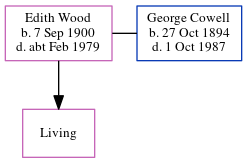

Edith Mabel Cowell (née Wood) 1900 - c1979
[ Home ] | [ Calendar ] | [ Surnames Index ] | [ Census Index ] | [ Family History ]Edith Wood, the wife of George James Cowell (the first cousin twice-removed on the mother's side of Nigel Horne), was born in Garlinge, Kent, England on Sep 7, 19001,2,3,4 and. She married George (a horseman with whom she had 1 surviving child, Annie Edith) in Thanet, Kent, England around Nov 19285 (Oct/Nov/Dec).
During her life, she was living at Garlinge Farm Cottages in Garlinge on Mar 31, 19016 and on Apr 2, 19111; and at Acol Hill Farm, Shottendane Road, Birchington, Kent on Sep 29, 19392.
She died c. Feb 1979 in Thanet4.
Citations
- 1911 Census for England & Wales - Findmypast (was age 10 and the daughter of the head of the household)
- 1939 Register - Findmypast (was the wife of the head of the household)
- England & Wales births 1837-2006 - Findmypast
- England & Wales deaths 1837-2007 - Findmypast
- England & Wales marriages 1837-2008 - Findmypast
- 1901 England, Wales & Scotland Census - Findmypast (was age 0 and the daughter of the head of the household)
Media
England & Wales marriages 1837-2008 - BMD/M/1928/4/AZ/001313/069
England & Wales deaths 1837-2007 - BMD/D/1979/1/AZ/000265/062
1939 Register Transcription - TNA-R39-1752-1752A-004-01
England & Wales births 1837-2006 - BMD/B/1900/4/AZ/000623/164
1911 Census for England & Wales - GBC/1911/RG14/04484/0239/6
1939 Register Transcription - TNA-R39-1752-1752A-004-03
1901 England, Wales & Scotland Census - GBC/1901/0005522269
Family Tree
Generated by ged2site. Last updated on Jun 11, 2024